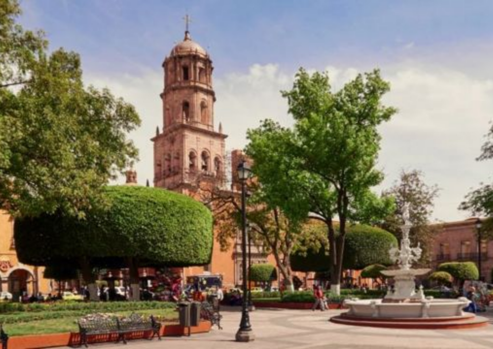
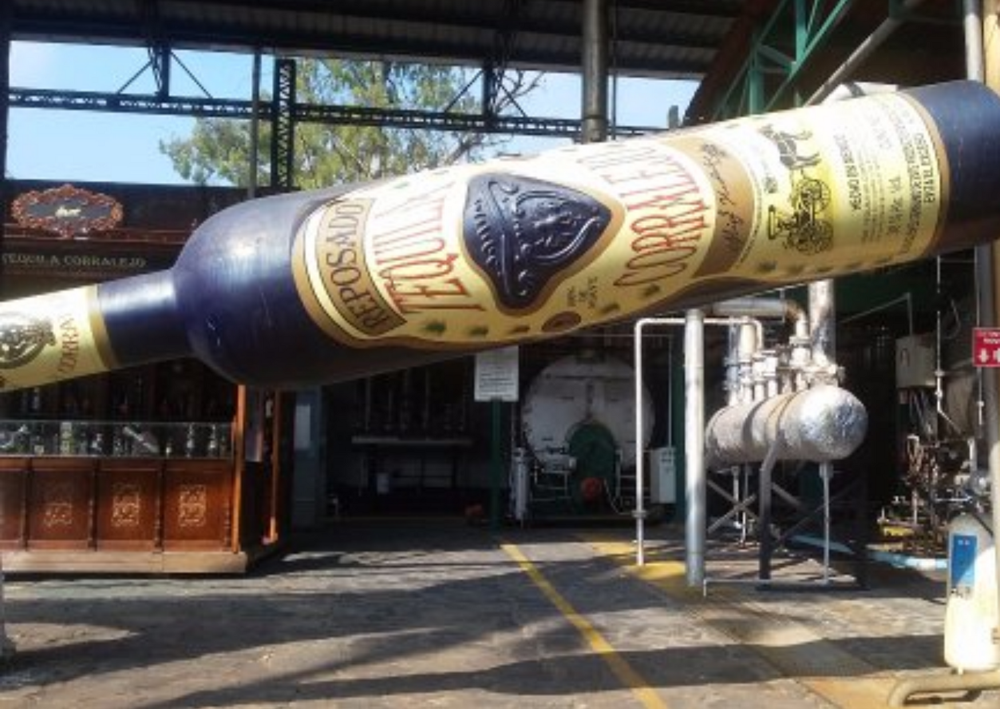

- Todos los tours
- Destacados
- Ofertas
- Recientes

Tour a Querétaro
$3,500
-Acueducto
-Mirador
-Panteón de los Queretanos ilustres
-Convento de la Cruz
-Templo de la Cruz
-Templo del calvario
-Cerro de las campanas
-Monumento a Juárez Tiempo libre para comida
-Teatro de la república
-Jardín corregidora
-Jardín zenea
-Casa de la corregidora
-Plaza de Armas
Tiempo libre para fotografías y compras.
Duración Aproximada: 8 hrs y media.
Guía y carro.

Tour a Morelia
$4,000
Ciudad de piel rosada y corazón de dulce
08:00 am. Salida del Hotel para pasar a Desayunar camino a Morelia..
11:30 am. Aprox. Llegada a Morelia para conocer:
* Av. Madero (antigua calle real)
* Edificios y Casonas Antiguas (abordó de la unidad)
* Emblemática Fuente fe las Tarascas (símbolo de los Michoacános)
* Acueducto
* Templo de Guadalupe (bello templo todo plicromado y laminado en oro)
* Museo del Dulce Moreliano (único en México)
-Traslado al Centro Histórico de la Ciudad
Ahora conoceremos caminando:
* Catedral de Morelia (una de las más bellas de México)
* Palacio de Gobierno
* Palacio de Justicia
* Universidad Michoacána (Dónde estudiaron Miguel Hidalgo, Morelos, Melchor Ocampo)
* Biblioteca Pública del Edo
* Palacio Clavijero
* Templo de Santa Rosa (retablos elaminados en oro)
* Mercado de Artesanías y Dulces Típicos... (tiempo libre)
*18:30 hrs.* Aprox. Retorno a Guanajuato.
-Incluye:
Vehículo Jetta 2019 🚘
Servicio por Autopista 🚧
Gasolina ⛽
Viaticos Chófer Guía 🤓
Seguro del Viajero 📑

Tour a Tequilera Corralejo
$2,500
Salida Rumbo a Pénjamo, Gto...
Llegada a la Tequilera Corralejo (visita guiada por las instalaciones, museo del vino y del refresco, así como visita a la tienda)
Traslado a la segunda sección de Tequilera Corralejo para conocer el Museo del Reloj. 🕰️
Salida rumbo a Irapuato a comer y posteriormente a degustar unas ricas 🍓 con crema 😋
18:00 hrs. Aprox Llegada estimada a Guanajuato.